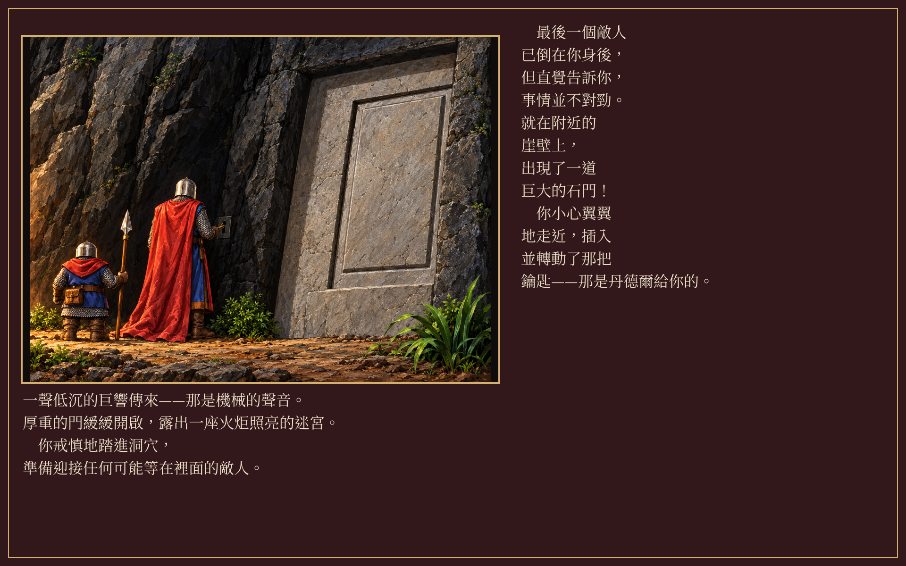
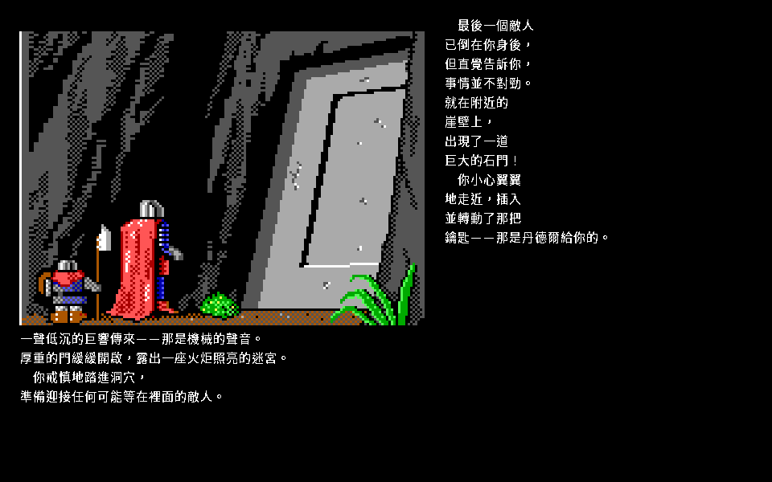
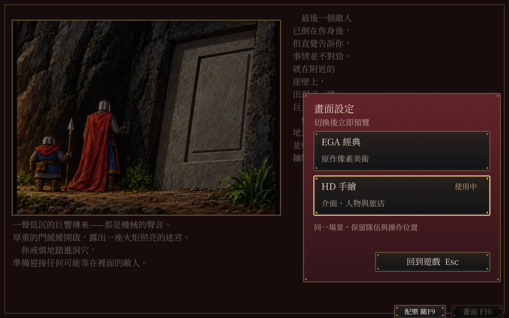

待核准，尚未接入正式遊戲。畫面含結局內容。沿用手繪、1920×1200及紅黑銅框。
完整盤點與限制 · 來源清冊 · 中文及遊戲內 F10 收據



| 畫面 | 現況 | 待完成 |
|---|---|---|
| 片頭與翻書動畫 | 未完成 | 重繪每幀並核對順序、時間、雷聲與配樂；切換不推進動畫 |
| 書本、目錄、角色選項與名冊 | 未完成 | 封面、所有選項、反白與最長中文；鍵鼠切換不改游標 |
| 建立角色與自訂圖編輯 | 未完成 | 姓名、種族、職業、屬性與確認；自訂肖像／盾牌及舊 v3 不失真 |
| 旅店與標準建築對話 | 部分完成 | 其他 NPC、超過九行、輸入游標、多段對話與各種服務分支 |
| 商店、訓練、馬廄、法術與任務子頁 | 未完成 | 商品清單、買賣確認、明細、訓練、坐騎、法術編輯、任務接取／回報 |
| 人物資料、技能、裝備、法術與任務清單 | 未完成 | 每位隊員、長名稱、空列、捲動、物品動作、送禮與編輯 |
| 人物、NPC、怪物、坐騎與組合裝備 | 部分完成 | 角色／盔甲／武器／盾牌分層錨點、各種體型、怪物與四坐騎 |
| 城鎮、建築門面與城門 | 部分完成 | 七城其餘門面、圖像中文字、城門、走路標記與各種天候 |
| 世界探索、地圖、天候與野外提示 | 未完成 | 所有地形、城鎮入口、換日、任務地點、遭遇、騎走與天候圖層 |
| 戰鬥主畫面與操作分支 | 部分完成 | 戰場、敵人框、選格／目標、攻防與移動選項、指令圖、執行／結果 |
| 傷勢、法術、效果與標記 | 未完成 | 手繪人形與可追溯部位遮罩一起驗，選格和傷害部位保持 |
| 事件、戰鬥結果與七段結局 | 未完成；結局第0段候選 | 原版 DOS／重製 EGA／手繪 HD 分開截圖，每段中文完整，事件次序與按鍵一致 |
| 畫面與配樂設定 | 核准範圍完成 | 新增各場景都須沿用同一切換，事件段號／隊伍／游標／保存不變 |